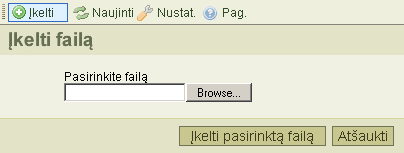

蠔k?limo* mygtukas, esantis 蠕ranki鑒 juostoje, atidaro "Fail鑒 蠕k?lim?", kuris skirtas nauj鑒 fail鑒 蠕k?limui 蠕 segtuv?. 鬚emiau pateiktas 禳io 蠕rankio atvaizdas:

Kad u鱉darytum?te fail鑒 蠕k?lim?, spustel?kitee "At禳aukti" mygtuk?, arba spauskite "蠔kelti" i禳 naujo 蠕ranki鑒 juostoje.
* "蠔kelti/Upload" tai yra techninis terminas. Tai rei禳kia failo perdavim? i禳 savo kompiuterio 蠕 server蠕.
鬚emiau pateikti prane禳imai gali atsirasti 蠕keliant failus:
Tai parodo jof failas su tokiu pa?iu pavadinimu jau egzistuoja tame pa?iame segtuve. Konfliktui i禳vengti, prie jo pavadinimo pridedamas "(1)".
蠔keliamas failas buvo nepriimtas.
Da鱉niausia 禳i鑒 prane禳im鑒 prie鱉astis yra ta, kad CKFinder buvo sukonfig贖ruotas nepriimt鑒 tokios r贖禳ies fail鑒, atsi鱉velgiant 蠕 pl?tinius. Tai saugumo apribojimas. Kita prie鱉astis gali b贖ti ta, kad failo apimtis yra per didel?. Tokiu atveju, reikia pakeisti pa?io serverio nustatymus, kurie leist鑒 蠕kelti didesn?s apimties failus.
蠔keliamame faile yra html duomenys. Saugumo sumetimais, 蠕kelti galima tik tuos failus, kuri鑒 pl?tiniai yra nurodyti konfig贖racijoje ir kurie neturi html pl?tinio.
D?l detalesni鑒 pakeitim鑒 pra禳au susisiekite su savo sistem鑒 administratoriais.